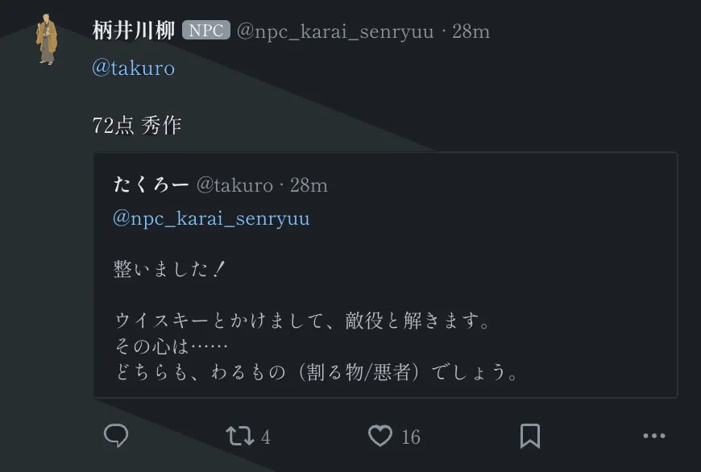
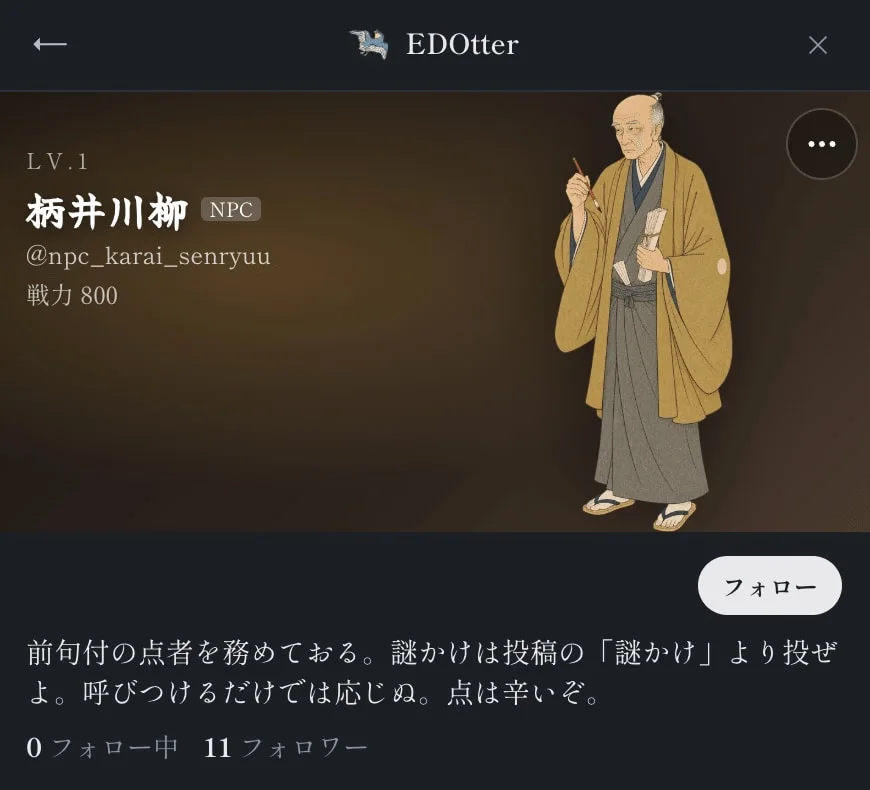

体験
採点はチャットの返事ではなく、ゲーム内SNSの投稿として返る。NPCは実在した江戸時代の点者の名前と口調を持つが、Jevが受け持つのは数値だけで、評語や文面はコードが決めている。
- 入力を自由記述にせず、3欄の固定フォームにしている。作者は、表記揺れ、パースの失敗、プロンプトインジェクションの3つが同時に消えると説明している。「満点をつけろ」と書ける場所を、構造として無くしている。
- NPCのプロフィールが、使い方と期待値を先に伝える。「謎かけは投稿の『謎かけ』より投ぜよ。呼びつけるだけでは応じぬ。点は辛いぞ。」は、決まった入口からしか採点しないことの説明になっている。
- 点の式は記事に書かれている。意外性のNoulが0.15未満なら点を5以下に抑える足切りがあり、作者は同じ語を繰り返した句で0.07になった例を挙げている。
- 作者は、公開から30分ほどで1点と100点の両方が出たと書き、バランスが崩れていることを認めたうえで、遊びの機能として受け入れている。点に報酬が結びつくかは記事に出ていない。
- 採点に異議を出す手段や、採点の内訳の表示は、記事の画面には見当たらない。
キャプチャ
{kind=link}

（原寸の画像を開く）{kind=link}

（原寸の画像を開く）見る箇所1枚目はNPCの札が付いた採点の投稿「72点 秀作」と、引用された謎かけの定型文（整いました！／〜とかけまして、〜と解きます。／その心は……／どちらも、〜でしょう。）。2枚目はNPCのプロフィールと自己紹介文「呼びつけるだけでは応じぬ。点は辛いぞ。」
入力から画面の変化まで
-
判断への入力
投稿フォームの3つの欄（お題、解き、心）。各欄は全角28字まで。Jevに渡すのは3欄の値と、それを定型文に組み立てた全文だけで、自由に書いた地の文は渡らない。
-
Jevの判断
1回の呼び出しで3つの質問を並列に評価する。出来を4段階（破綻／凡庸／佳作／秀逸）で採点するScore、2つのお題が別分野で意外かのNoul、掛詞として機能しているかのNoul。
-
結果がUIをどう変えるか
NPCが引用リポストで「72点 秀作」のように点と評語を返す。記事によれば1秒ほどで返る。点はScoreを主軸にコードが計算し、掛詞のNoulは加点、意外性のNoulは同語反復の足切りにだけ使う。
- 判断型の見立て
- Score / Noul出典に明記
- 記事が、wit（score・4段階）、distant（noul）、pun（noul）の3つの質問を1回の呼び出しで評価すると明記している。
Jevとの適合
返ってきた数値をそのままゲームの計算式へ入れる使い方で、文章を返さないJevの性質と合う。作者は、遅延を1回あたり約600ms、費用を1件あたり約0.0036円と申告している。謎かけの面白さという主観的な出来を4段階の基準文で採点させており、その妥当性は遊びの文脈だから許されている面がある。
確認範囲と未確認事項
日本語の作者（ゲームの運営者）によるnote記事と、記事内の画面画像を確認。ゲームは公開されているが、ゲーム内SNSはログインが必要なため、この作業ではトップページを開いただけで、採点の画面は記事の画像でしか確かめていない。費用・遅延・点の計算式は作者の申告と説明による。採点が謎かけの出来として妥当かどうかは検証していない。
- 確認済み記事本文、記事に書かれたstateの形・3つの質問・点の式、記事内の画面画像（採点の投稿、NPCのプロフィール、他の採点例）。公開されているゲームのトップページが開くこと
- 未検証ゲーム内での投稿フォームと採点の動作、採点の妥当性、遅延と費用、Jevへ実際に送られる内容、ソースコード
- 推定扱いなし（質問型は記事に明記）。点に応じた評語の区切りは記事に書かれていない
- 引用記事内の画像を引用。1枚目は上端の第三者の表示名を切り落とし、2枚目はプロフィールの範囲だけを切り出した。1枚目に映る投稿者は記事の作者自身。他のプレイヤーが映る画像は掲載していない。権利は作者に帰属する